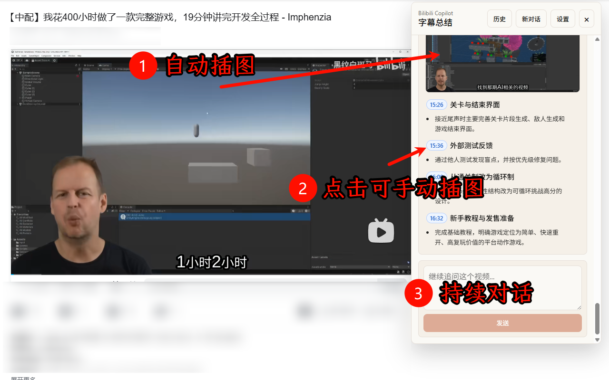

长视频快速扫读
先看总结和要点，再决定是否深入观看完整内容。
Bilibili AI 视频总结助手
Bilibili Copilot 会读取当前视频字幕，调用兼容 OpenAI Chat Completions 的模型，生成结构化 Markdown 总结。适合长视频学习、课程回顾、访谈速读和资料整理。

使用场景
先看总结和要点，再决定是否深入观看完整内容。
保留关键片段线索，方便回到视频里的具体位置。
把字幕内容转成结构化 Markdown，后续复制、导出、归档都更顺手。
社群交流
官网先承担入口职责：仓库主页用于查看代码和版本，Telegram 群用于交流使用体验、反馈兼容问题和讨论后续方向。